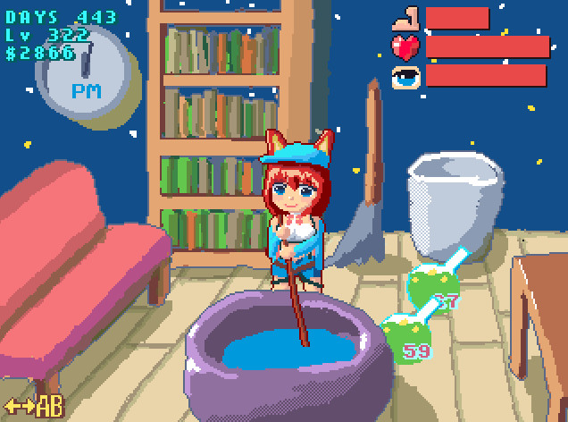

[日本語版 (Japanese version)]
keep an eye on My Little Fledgling

Tap or click "CLICK TO START" to start the game.
Or you can play on Windows executable file (.exe).
The content is same.
Background
This is a fangame of Atelier Resleriana: The Red Alchemist & The White Guardian.
The kemomimi girl is named Rias. She is a novice alchemist at the start of the game.
Please watch over her. The game is mostly about observing her daily life; occasionally you may gently nudge her to do something, but avoid disturbing her when she is concentrating.
Goal
There is no explicit win condition or ending in this game.
- Level:
Rias’s skill level improves when she successfully produces higher-quality items.
- Money:
She earns money by selling items. Higher-quality items fetch higher prices.
Save
The game automatically saves your progress in your web browser or on your PC.
Even when you're not looking at Rias (when the game is not running), she's still getting things done.
How to Play
- Mouse/Touch:
Click or tap a piece of furniture to perform its action.
- Keyboard:
- ←→:
Move the cursor to select a piece of furniture.
- Space:
Perform the action associated with the currently selected furniture.
- Controller:
- ←→:
Move the cursor to select a piece of furniture.
- A/B:
Perform the action associated with the currently selected furniture.
Action
- Synthesizing:
Rias synthesizes a neutralizer in the cauldron. Her skill and concentration influence the likelihood of producing a higher-quality neutralizer. Successfully creating high-quality neutralizers can contribute to increasing her skill.
- Short break:
Rias prepares herself for the next task. Maybe she will choose synthesizing or sleeping.
- Reading:
Studying books improves Rias’s skill.
- Cleaning:
She tidies the room and collects stray neutralizers. Collected items can be sold for money. Cleaning also has a gentle positive effect on her health.
- Sleeping:
Rias sleeps to recover stamina.
Status Description
- Stamina:
When stamina is very low, Rias may refuse or ignore action commands.
 Health:
Health:
Low health reduces the rate at which stamina recovers.
- Concentration:
Higher concentration increases the probability of better synthesis results.
Hint
At the beginning, Cleaning and Reading improves Rias's skill.
README
Atelier Resleriana: The Red Alchemist & The White Guardian is a game by KOEI TECMO GAMES CO. LTD.